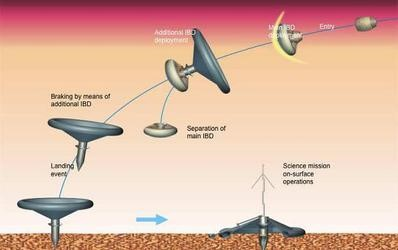

SCIENTIFIC AND TECHNICAL CHALLENGES
FOR FUTURE PLANETARY SCIENCE MISSIONS
MARS

FUTURE MISSIONS
Introduction to future missions
MELOS - JAXA
MELOS is the Mars Exploration of Life and Organism Search. It is a proposal for a future mission currently under study by the Japanese Space Agency, JAXA. On the one hand, it consists of a Rover whose purpose is to show the precision of landing, as well as investigating biosignatures and its importance in astrobiology. On the other hand, it also involves the activity of orbiters to carry out comparative meteorology. There are three main scientific objectives set for MELOS:
- Escaping Atmosphere:
- It is a complementary study to the already carried out 2013 MAVEN mission.
- This study will now consist of a study of the removal of ions in the upper atmosphere.
- The main focus will rely on the analysis of solar-wind interactions.
- Meteorology:
- It will display terrestrial differences between Earth, Venus and Mars, with a particular focus on water cycles.
- Imaging camera to provide global mapping from an elongated orbit and vertical information up to 150km.
- Interior Structure & Surface Environment:
- A study on the seismic activity of the red planet to understand its solid structure.
- It will also help to determine the evolution of craters.
- It can lead to the measurement of atmospheric electricity.
The main actors involved in this mission are Research Institutes, universities and foreign countries:
- Research Institutes
- National Institute of Information and Communications Technology
- National Astronomical Observatory of Japan
- National Institute of Environmental Studies
- Universities
- University of Tokyo
- Aizu University
- Kobe University
- Osaka University
- Nagoya University
- Tsukuba University
- Kyoto University
- Tokyo Institute of Technology
- Tohoku University
- Tokyo Gakugei University
- Rikkyo University
- Toyama University
- Kyushu University
- Foreign Countries
- IRF (Sweden)
- MPI (Germany)
- Caltech & Cornell Universities (USA)
MARS GRUNT - ROSCOSMOS
It is a robotic spacecraft sample return mission proposed to be sent to Mars in mid 2020s. It was proposed to the Russian Federal Space Agency (Roscosmos) by the Russian Space Research Institute.
ICEBREAKER - NASA
After the success of the 2008 studies carried out by Phoenix and InSight, NASA's Discovery Program is proposing a new mission to further investigate astrobiology on Mars. Using a lander, Icebreaker Life, NASA plans to drill the iced ground in the northern plains with the purpose of analyzing samples and studying biosignatures of both current or past life on the red planet.
It's scientific goals consist of:
- Searching for biomolecules that would directly infer to the presence of current or past life on the red planet.
- Findings of organic material present in Mars' iced layers.
- Understanding the relationship of liquid water on the planet with the formation of ice and its evolution, as well as the properties of the iced ground.
- Analyzing the possibility of sustainable life on Mars.
- Comparing ground among different regions of the planet.
MARS SAMPLE RETURN - NASA & ESA
Mars Sample Return is a proposed joint mission between NASA and the European Space Agency, with the purpose of returning samples from the surface of Mars to Planet Earth. This mission involves different stages of sample collection and return. It would be necessary to use a robotic system for collection and an ascent engine for return of samples to Earth. Samples will be used to study the soil, rock composition and atmospheric conditions on the red planet.
NEXT MARS ORBITER - NASA
Mars 2022 Orbiter mission changed its name to the Next Mars Orbiter, informally known as NeMO. It is a communications satellite with a very similar structure to those already seen in some previous missions. This telecommunications orbiter is used as a complementation of an already existing Mars rover launched in 2020. However, this time, the main objective is to provide high-resolution imaging, featuring ion thrusters and improved solar arrays. According to NASA's Mars Exploration Program Director, it might also use high-power solar-electric propulsion or an optical communications package in order to ameliorate the speed of communication and capacity over radio frequency systems, said Jim Watzin.
DEIMOS AND PHOBOS INTERIOR EXPLORER - ESA
Deimos and Phobos Interior Explorer (DePhine) is a 2016 European future proposal mission that would concentrate on investigating Deimos and Phobos, the two Moons of the red planet. It was proposed to the European Space Agency's Cosmic Vision with a programmed launch in 2030 but was not voted for execution. DePhine would explore the origin and the evolution of the two Martian satellites, by carrying out 10-20 close flybys at low velocities, which shall increase data integration times, data resolution and the signal strength. According to ESA's Cosmic Vision, the instruments to be used are a camera system, radio, high frequency radar, a magnetometer, and a Gamma Ray/Neutron Detector. The questions to be asked in order to properly investigate these two satellites are:
- Are Phobos and Deimos true siblings, originating from the same source and sharing the same formation scenario?
- Are the satellites rubble piles or solid bodies?
- Do they possess hidden deposits of water ice in their interiors?
MARS METNET - FINLAND, RUSSIA & SPAIN
This is a future atmospheric science mission by the Finnish Meteorological Institute (FMI) and under development by Finland, Russia and Spain. This mission, based on a semi-hard lander, was already foreseen in the 1980s by the FMI, but never implemented. In 2013, two flight-capable entry, descent and landing systems (EDLS) were tested. The design of this mission already included at least 16 MetNet landers to observe different areas of the surface of Mars.
